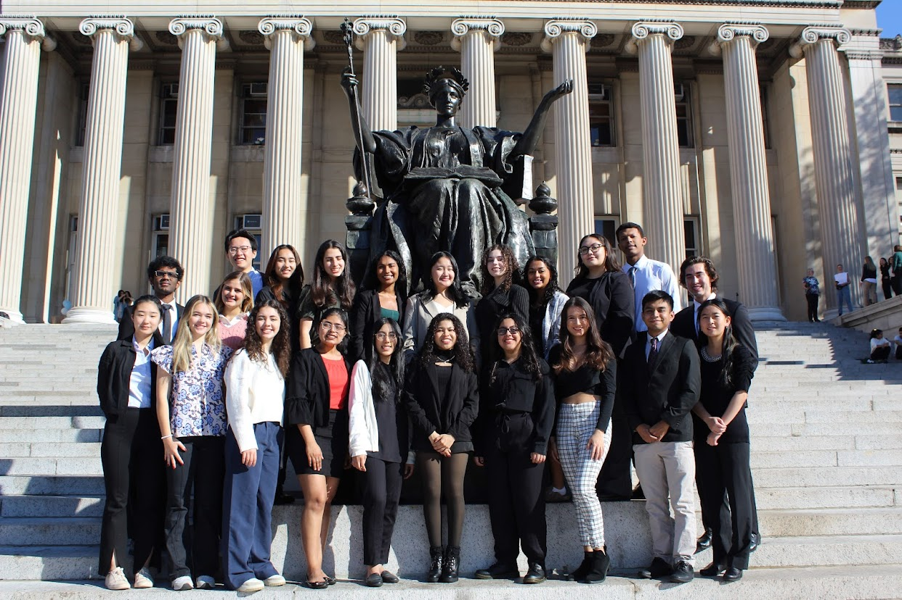

← Back to research
EXPERIENCE
Biomedical Engineering Society (BMES)
Subtitle

Overview
As part of the Professional Development Committee at BMES, I formed a supportive network of peers across different class years. One of the highlights was organizing the Health Hackathon and alumni/faculty panels. Meeting people who were passionate about development, technology, entrepreneurship, and research was inspiring. I also enjoyed reaching out to companies and research institutes that supported the annual hackathon.
Methods
Body
Outcomes
Body